| .NET | Node.js | PHP |
| Python | Java |
Choose your own adventure!
Visit azure.microsoft.com
© 2016 Microsoft Corporation. All rights reserved. Microsoft, Windows, Windows Vista and other product names are or may be registered trademarks and/or trademarks in the U.S. and/or other countries. The information herein is for informational purposes only and represents the current view of Microsoft Corporation as of the date of this presentation. Because Microsoft must respond to changing market conditions, it should not be interpreted to be a commitment on the part of Microsoft, and Microsoft cannot guarantee the accuracy of any information provided after the date of this presentation. MICROSOFT MAKES NO WARRANTIES, EXPRESS, IMPLIED OR STATUTORY, AS TO THE INFORMATION IN THIS PRESENTATION.